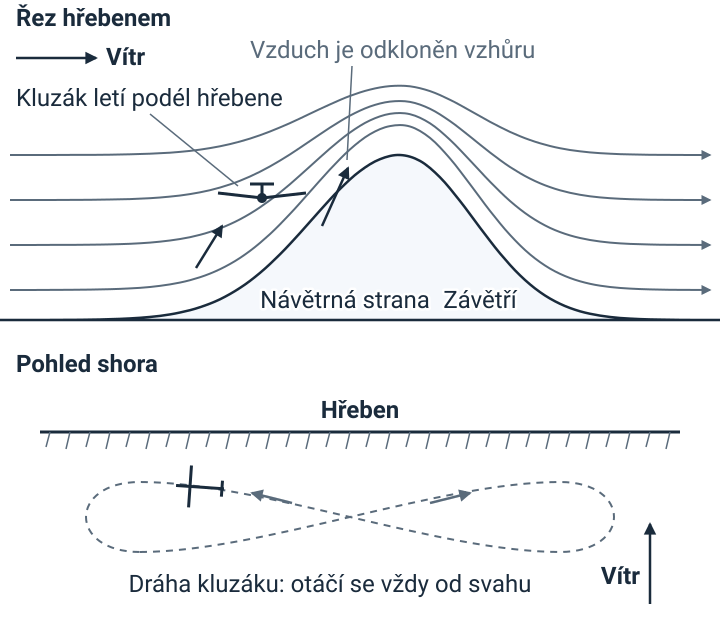
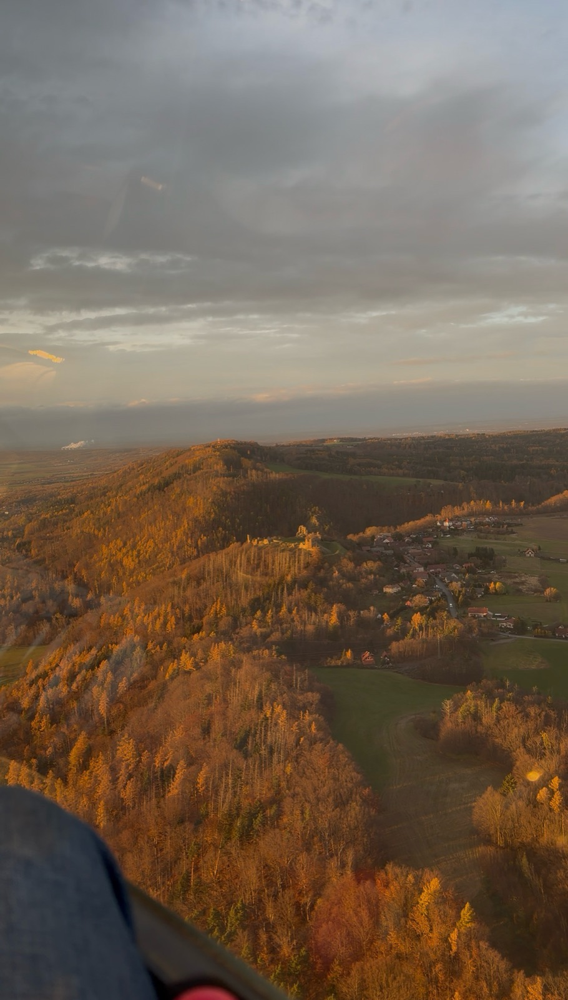
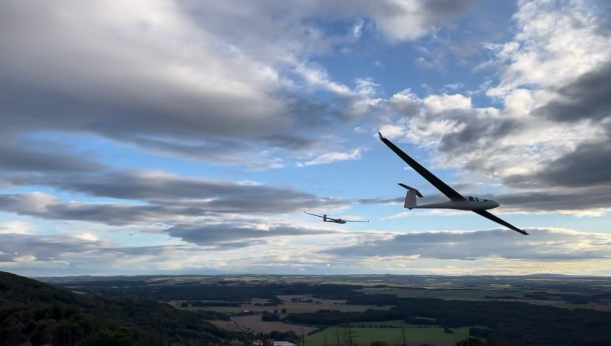
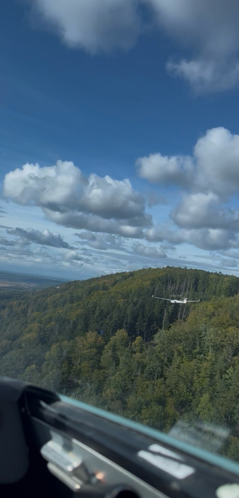

Svahové létání
Nejstarší způsob plachtění. Než piloti objevili termiku, létali právě na svazích, a proto první plachtařská letiště vznikala přímo u kopců. Už v roce 1924 se na kopci u Brna v Medlánkách konala první národní soutěž kluzáků, na Rané u Loun se plachtí od roku 1932 a ve 40. letech fungovalo u Železných hor svahové letiště Podhořany-Bumbálka.
Princip
Když vítr fouká kolmo na dlouhý hřeben, nemůže skrz něj, a tak je odkloněn vzhůru. Nad návětrnou stranou svahu vzniká pás stoupajícího vzduchu. Pokud vzduch stoupá rychleji, než kluzák klesá, letadlo se udrží ve vzduchu.
Pilot létá podél hřebene tam a zpět, vždy na návětrné straně, a obrací se směrem od svahu. Létá se nízko, často jen pár desítek metrů nad terénem, a proto svah vyžaduje přesnou pilotáž a soustředění.
Výška nad svahem je zároveň bezpečnostní rezerva: kdyby vítr zeslábl, musí pilot stihnout doklouzat na přistání do terénu pod svahem.

Kde v Česku
U nás se na svahu nejčastěji létá na Železných horách z letiště Podhořany. Jejich hlavní svah je jeden z nejdelších táhlých hřebenů v Česku a je natočený k jihozápadu, tedy proti západnímu proudění, které je pro Česko typické. Slavným místem je také Raná u Loun. Na jejím svahu dnes nejčastěji létají paraglidisté.

Podmínky a sezóna
- Vítr
- dostatečně silný a co nejvíc kolmo na hřeben.
- Sezóna
- hlavně v chladné části roku, kdy přecházejí větrné fronty. Podle zkušeností z Podhořan se nejlepší období posunulo z podzimu spíš na přelom roku až do března.
- Pozor na
- blízkost terénu, další letadla na svahu a zeslabení větru. U svahu platí zvláštní pravidla pro míjení.

Moje zkušenost
Na svahu Železných hor létám hlavně na podzim. Výška hřebene se po jeho délce mění, a to dělá létání podél něj zajímavým. Podle pravidel CPS se tu dá jako úloha zaletět až 250 km. Svahoval jsem zatím jen tady v Podhořanech.
